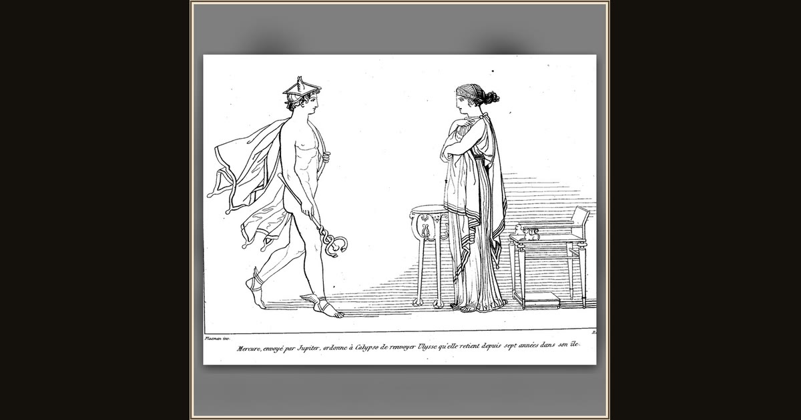

Hermes orders Calypso to release Odysseus
John Flaxman · 1810 · Wikimedia Commons
Hermes strides in at left on his winged sandals, the snake-twined herald's wand in his lowered hand, to deliver Zeus's order: Calypso must let Odysseus go. Homer's wand is the one that charms eyes asleep or awake (Od. 5.43-48); Flaxman sets Calypso stiff and a